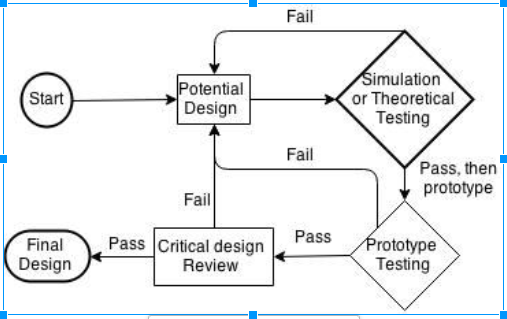

Mechanical Subdivision
Hull is a pressure chamber meant to provide a waterproof enclosure to place electronics and other water sensitive components of Matsya.To incorporate various needs like accessibility to inner component(s), field of sensing etc.,Matsya houses four types of hulls namely: battery hull, camera hull, main hull and sensor hull. The hull sub-division also designs custom made connectors, penetrators and underwater switches.
Frame is responsible for providing a rigid structure to Matsya’s peripherals. The positioning and mounting of peripherals have been done strategically to develop a bottom-heavy open-frame structure which exhibits symmetry, modularity and stability. Benefits of an open frame structure includes easy & fast accessibility and inspection of any component of Matsya. To make the vehicle dynamically stable, the peripherals are placed so as to align the Center of Buoyancy (COB) and the Center of Mass (COM) vertically, with COM lying below COB.
This sub-division handles grippers, torpedo launchers and marker droppers of Matsya. All the three actuators are connected to a centralized pneumatic system which uses a standard paintball CO2 tank as the power source. To control the power, Matsya incorporates six control valves and a pressure regulator to step down the tank’s pressure in order to produce a steady output of 100 psi.
